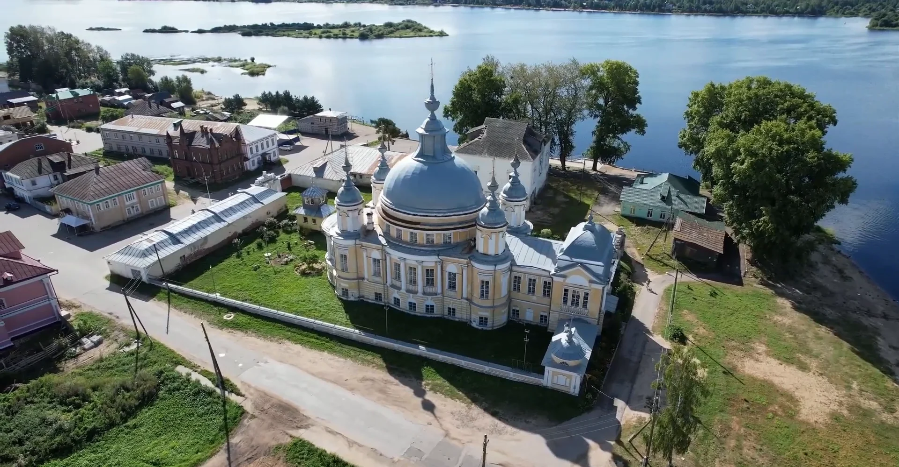
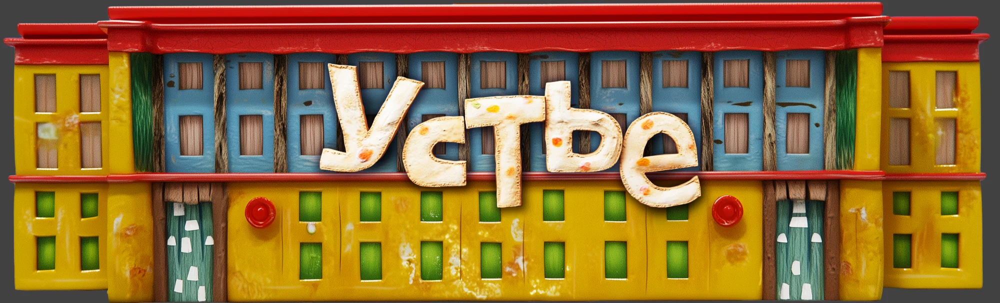
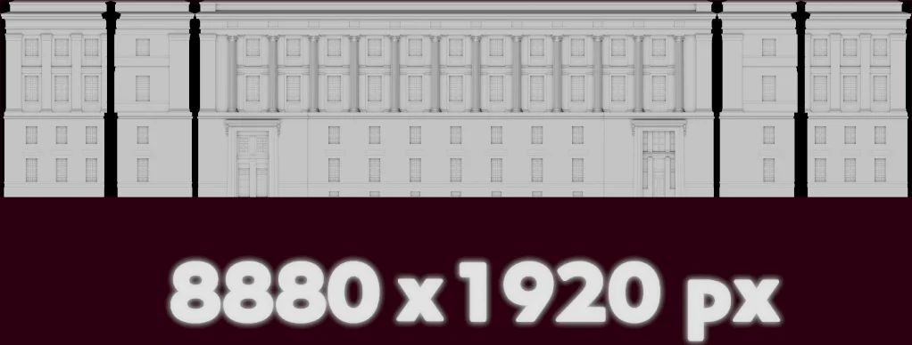
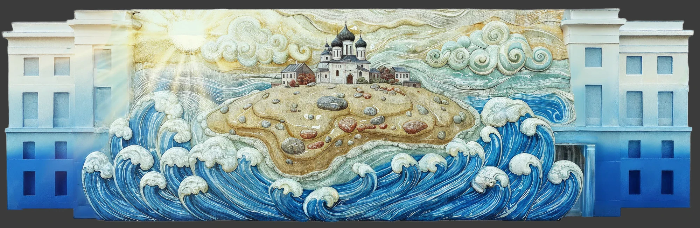
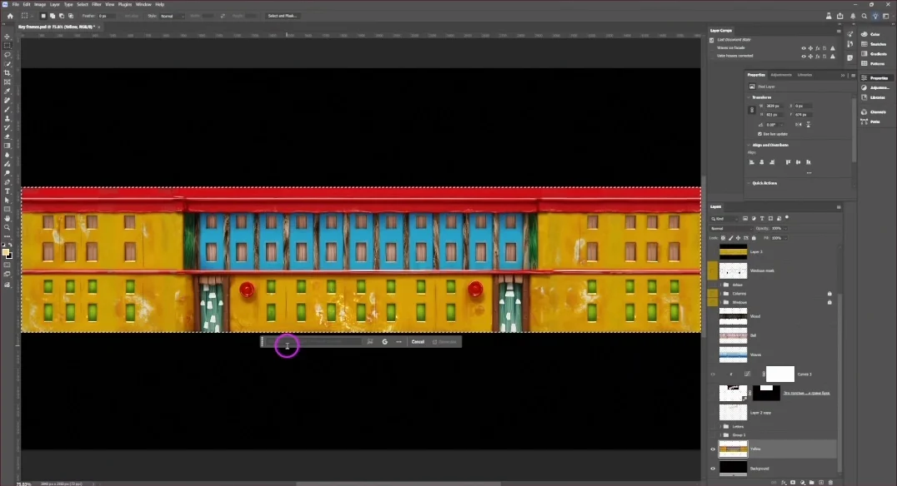
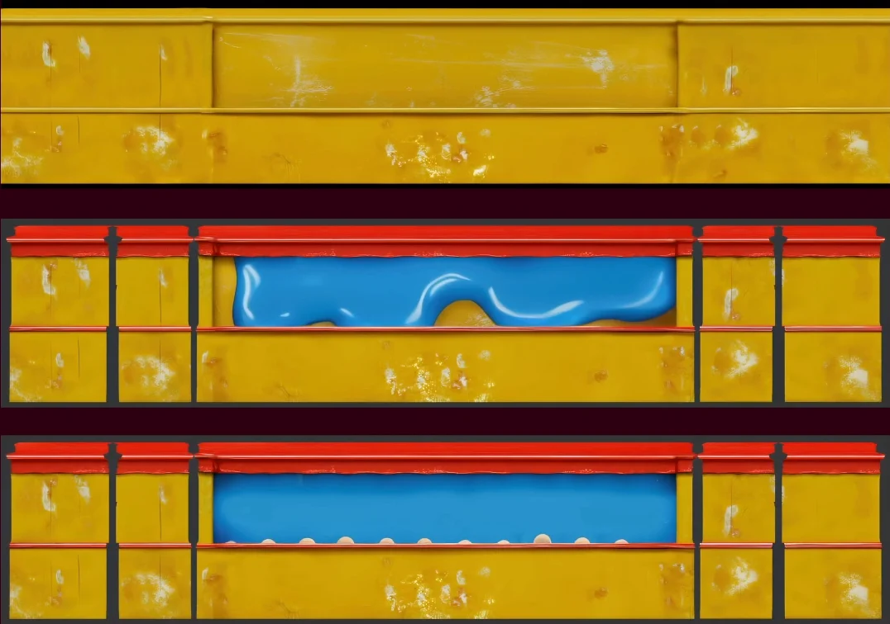
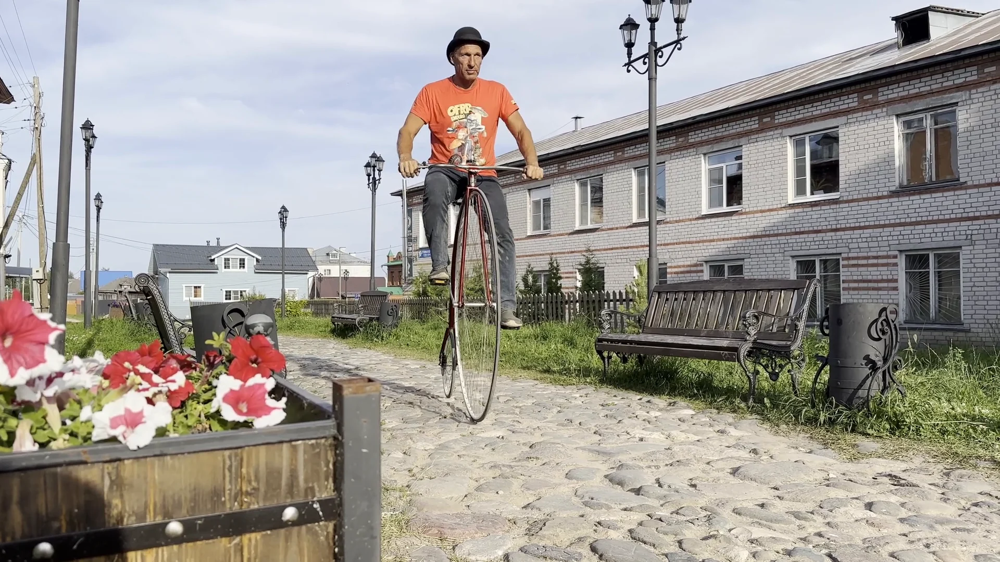
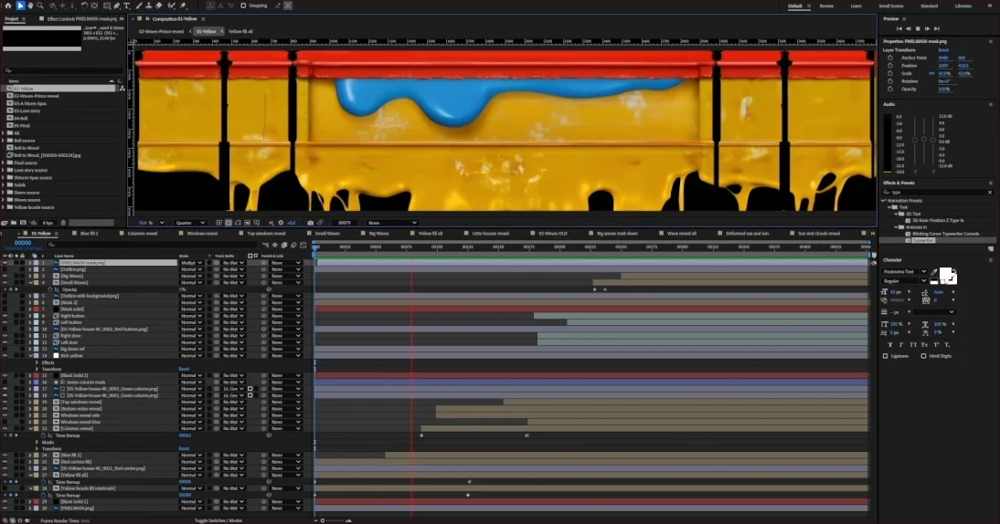
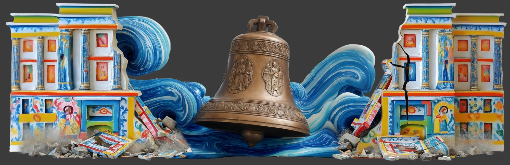
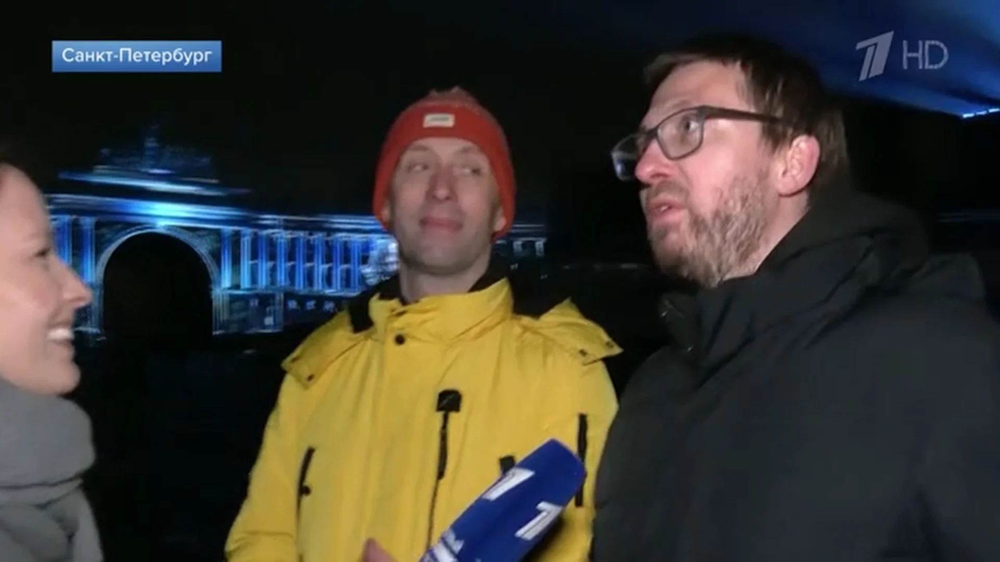

Мэппинг для конкурса
«Страна Света-2025»
Устьянские легенды
Задача
По правилам конкурса нужно рассказать сказки, легенды и мифы своего места силы. Мы выбрали Устье, село под Вологдой на берегу Кубенского озера.
Решение
Рассказ из пяти частей о легендах Устья, стилизованный под вологодскую глиняную игрушку. Кадры и анимацию делали с нейросетями, а собирали и доводили вручную.
Почему Устье
Сначала мы заявили на конкурс мэппинг про Белое море. Но летом Артем оказался в Устье по приглашению приятеля: почти месяц ходили с ним под парусом по Кубенскому озеру, ездили по заброшенным деревням. Прямо оттуда Артем написал организаторам и попросил поменять тему на Устье. Перед отъездом зашел в местную библиотеку, там посоветовали книги про село. Из них и собрали сценарий.

Пять частей и пять фасадов
Начало, легенда об острове Спас-Камень, легенда о монахе, легенда о колоколе и эпилог. Дома Устья похожи на книги с резными обложками, за каждым своя история. Поэтому у каждой легенды свой фасад: он рушится, плавится и уходит под воду, а из-под него проступает следующий.

Как вологодская глиняная игрушка
Организаторы дали модель здания в Cinema 4D и маску фасада шириной около 8000 пикселей. Первый дом сделали в Midjourney по этой маске и референсам. Midjourney пугался такой широкой картинки и размывал края, поэтому здание поставили в центр кадра 16:9.


Ключевые кадры и анимация
Ключевые кадры собирали из первого дома, по очереди убирая его элементы: большую часть делала Nano Banana, остальное дорабатывали руками в Photoshop. По первому кадру должно быть понятно, как пойдет анимация: из пустого черного фона нейросеть Kling не поймет, что анимировать, а по подтекам желтого фона понимает сразу.



Сборка
Сложную анимацию, где одновременно движется много мелких деталей, как в сборке трансформера, нейросети осенью 2025 года делать не умели. Но в мэппинге камера неподвижна, поэтому ролик можно склеить из разных генераций и подобрать порядок и тайминги. Все собирали в After Effects: маски, ротобраш, несколько дней работы на каждые 20 секунд. Потом апскейл в Topaz и перевод в финальный формат.


«Тысячи человек смотрят на твою работу на доме шириной больше ста метров. Мы же видим ее на нескольких мониторах, а тут она невероятного масштаба»
Третье место на конкурсе «Страна Света-2025»
После показа на Дворцовой площади у нас взял интервью Первый канал: сюжет в программе «Время» от 6 декабря 2025 года ↗. Наш мэппинг в нем с 0:50, а само интервью с 3:40.

Сделаем мэппинг для вашего фасада или события
Обсудить проектНаши главные проекты
Сейчас мы делаем интерактивные экспонаты для музеев и выставок: придумываем, рисуем, программируем и запускаем на площадке.

Следующая работа

Смотрите также
Нужны ролик, графика или сайт?
Пришлите задачу и сроки, обсудим
Давайте обсудим задачу
Москва, ул. Бауманская, 6, стр. 2 · Политика конфиденциальности